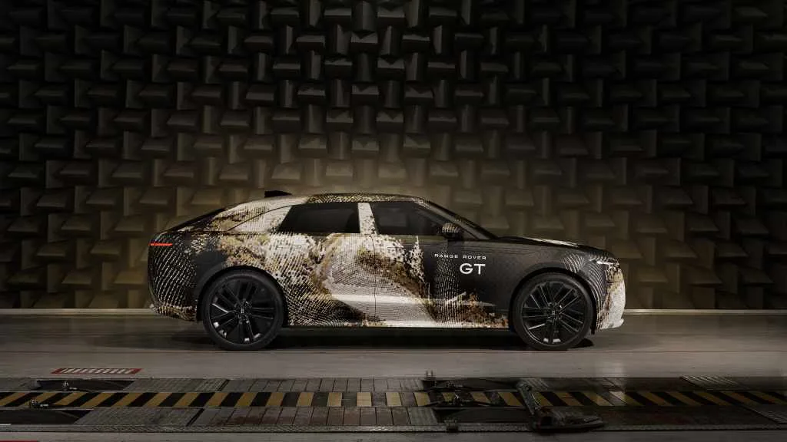
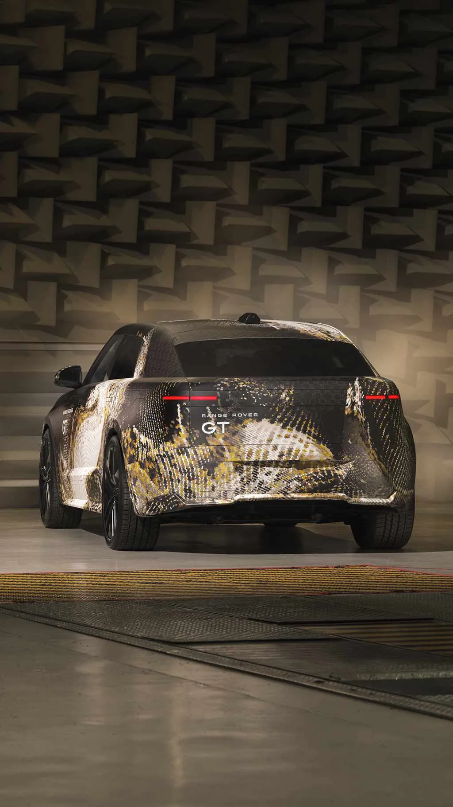
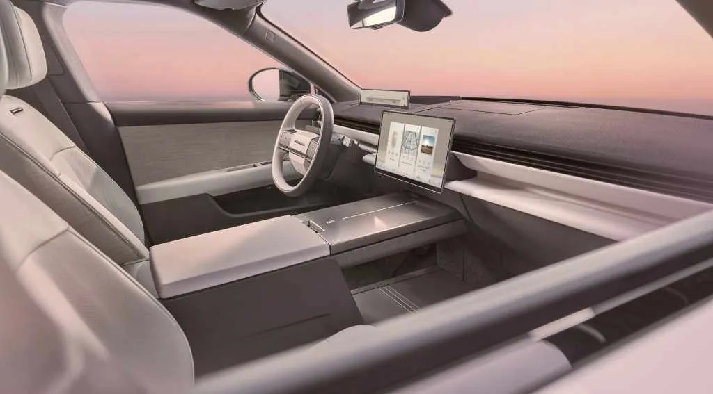

▲ 레인지로버 GT. 레인지로버 라인업 다섯 번째 멤버로, 기존 럭셔리 SUV와 달리 낮고 스포티한 패스트백 실루엣을 갖췄다
레인지로버가 브랜드 역사상 처음으로 저신장 그랜드 투어러 형태의 신차, '레인지로버 GT'를 실차 영상으로 공개했습니다. 그동안 공식 이미지로만 접할 수 있었던 이 차가 뉘르부르크링에서 실도로 테스트를 받는 모습이 포착되면서, 처음으로 생생한 비율과 디자인 디테일이 드러났습니다. 레인지로버 경영진은 이 차를 "가장 자동차다운, 그러면서도 명백히 유능한 레인지로버"라고 소개했습니다.
1. 왜 GT인가 — 럭셔리 SUV 명가의 새로운 시도
레인지로버는 지금까지 '가장 높은 곳에서 내려다보는' 정통 럭셔리 SUV 이미지를 브랜드의 정체성으로 삼아왔습니다. GT는 이 공식에서 벗어난 첫 시도입니다. 날카롭고 스포티한 패스트백 디자인을 앞세워, SUV의 실용성은 유지하면서도 세단에 가까운 주행 감각과 비율을 지향합니다. 레인지로버 관계자가 "가장 자동차다운 레인지로버"라고 표현한 것도 이런 방향성을 압축한 설명입니다. 브랜드 표현의 폭을 넓히려는 시도로, 포르쉐 카이엔 쿠페나 벤츠 GLC 쿠페 같은 '쿠페형 SUV' 트렌드와 궤를 같이하면서도 한층 더 과감한 패스트백 형태를 취했습니다.

▲ 측면에서 본 레인지로버 GT. 완만하게 떨어지는 루프라인이 기존 레인지로버 라인업과 뚜렷이 구분되는 실루엣을 만든다
2. 100kWh 배터리, 800km 주행거리의 전기 우선 전략
출시 초기 파워트레인은 순수전기(BEV) 기반입니다. 약 100kWh급 배터리를 탑재해 최대 500마일, 약 800km에 달하는 1회 충전 주행거리를 확보할 것으로 예상됩니다. 대형 럭셔리 SUV/GT 체급을 감안하면 상당히 야심 찬 수치입니다. 다만 전기차로만 끝나는 것은 아닙니다. 레인지로버는 라이프사이클 후반부에 풀 하이브리드(HEV) 옵션을 추가할 계획인데, 이는 충전 인프라가 상대적으로 부족한 시장이나 장거리 이동이 잦은 소비자층을 함께 아우르려는 전략으로 풀이됩니다.
| 항목 | 내용 |
|---|---|
| 초기 파워트레인 | 순수전기(BEV) |
| 배터리 | 약 100kWh |
| 예상 주행거리 | 약 800km(500마일) |
| 추가 예정 파워트레인 | 풀 하이브리드(HEV) |
| 생산 시작 | 2027년 상반기 |
| 생산 공장 | 영국 할우드(Halewood) |
| 예상 시작가 | 영국 £75,000 / 미국 약 $90,000 |

▲ 후면에서 본 레인지로버 GT. 패스트백 형태의 리어 해치와 낮게 깔린 후미등 디자인이 눈에 띈다
3. 실내 — "순수함, 정밀함, 조용한 현대성"
레인지로버가 이번 GT의 실내 철학으로 내세운 키워드는 "순수함, 정밀함, 조용한 현대성"입니다. 대형 디지털 스크린을 탑재하면서도 물리적 버튼과 공조 벤트를 최소화하거나 숨기는 방식으로 미니멀한 인상을 강조했습니다. 기존 레인지로버 라인업의 고급스러움을 유지하면서도, GT라는 이름에 걸맞게 운전석 중심의 배치와 낮은 시트 포지션을 반영한 것으로 보입니다.

▲ 레인지로버 GT 실내. 대형 디지털 스크린과 절제된 버튼 배치로 "조용한 현대성"을 구현했다
4. "가장 자동차다운, 그러면서도 유능한 레인지로버"
레인지로버 GT 개발을 이끈 마틴 림버트(Martin Limbert) 매니징 디렉터는 이 차를 두고 "그 결과물은 지금까지 나온 레인지로버 중 가장 자동차다우면서도, 명백히 유능한 모델(the most car-like, yet unmistakably capable, Range Rover ever created)"이라고 평했습니다. SUV의 오프로드 능력과 세단에 가까운 주행 감각을 동시에 담아내겠다는 개발 목표를 함축한 발언으로, GT라는 이름이 단순한 마케팅 수사가 아니라 실제 주행 성격의 변화를 예고하고 있음을 시사합니다.
5. 정리 — 2027년 상반기, 할우드에서 첫 생산
레인지로버 GT는 2027년 상반기 영국 할우드 공장에서 생산에 들어갈 예정입니다. 예상 가격은 영국 기준 7만5천 파운드 이상, 미국 기준 약 9만 달러부터로 알려져 상당한 프리미엄 포지션을 예고하고 있습니다. 아직 공식 세계 최초 공개 행사와 정확한 스펙 발표가 남아 있지만, 이번 뉘르부르크링 실차 영상은 렌더링만으로 짐작하던 비율과 디자인이 실제로 어떻게 구현됐는지를 확인할 수 있는 첫 단서가 됐습니다. 국내 출시 여부와 시기는 아직 확인되지 않았습니다.